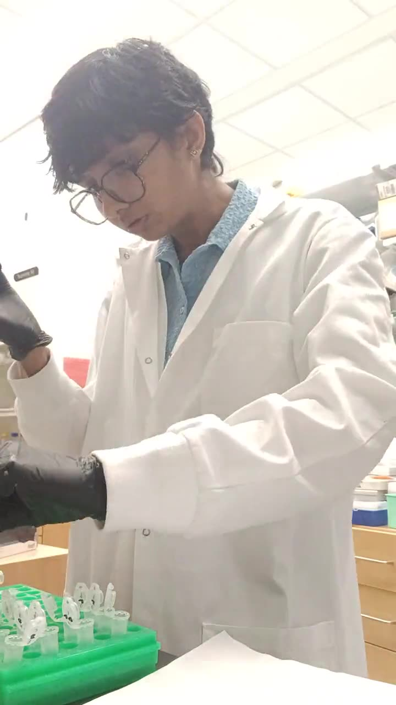
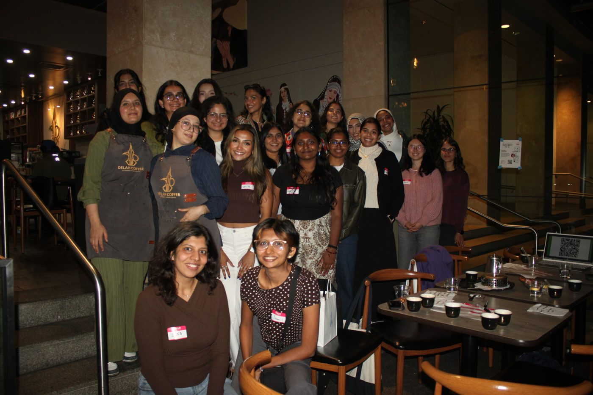
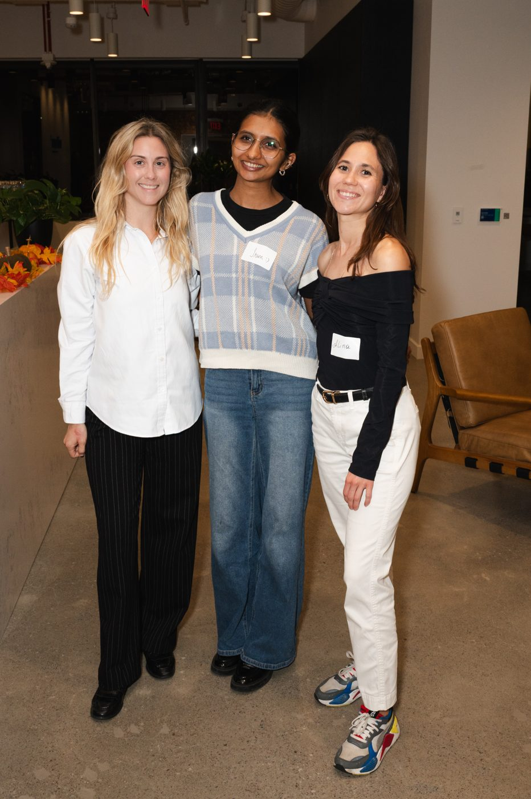
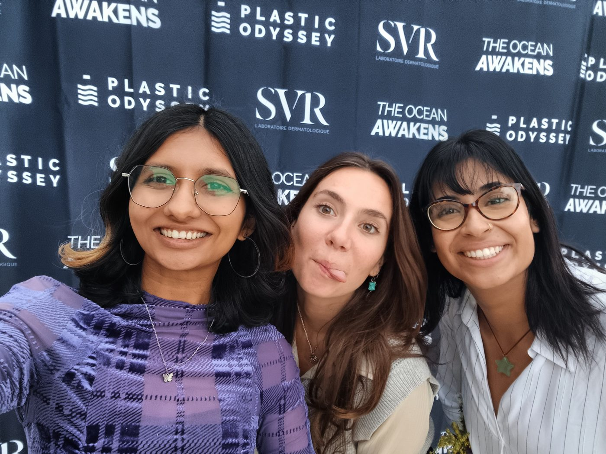

skills
- Research & data analysis
My curiosity has taken me to various labs and landscapes. How the world, nature and science work fascinates me. Some of it: poster days
 , wet lab work
, wet lab work
, science communication and computational research
and computational research .
. - Community building & event planning
Bringing people together for impact-driven causes: co-founding a community for South Asian women

, SF Tech Week
, events at JPMorgan and SynBioBeta , and New York Climate Week
, and New York Climate Week
. - Project ops & management
I coordinated trail-building projects with the US Forest Service and structured my undergraduate capstone through 50+ outreach calls with researchers, policymakers and climate professionals.
- Communication & collaboration
I have collaborated with multilingual teams across continents, from fieldwork with a scientific team in Argentina to performing at TEDx Seoul with an international team.
- Content development
I have created content for different audiences: social media for local awareness in Juneau, narrated YouTube videos on marine biology in Japan, a sustainability hackathon, and internship resources for college students.